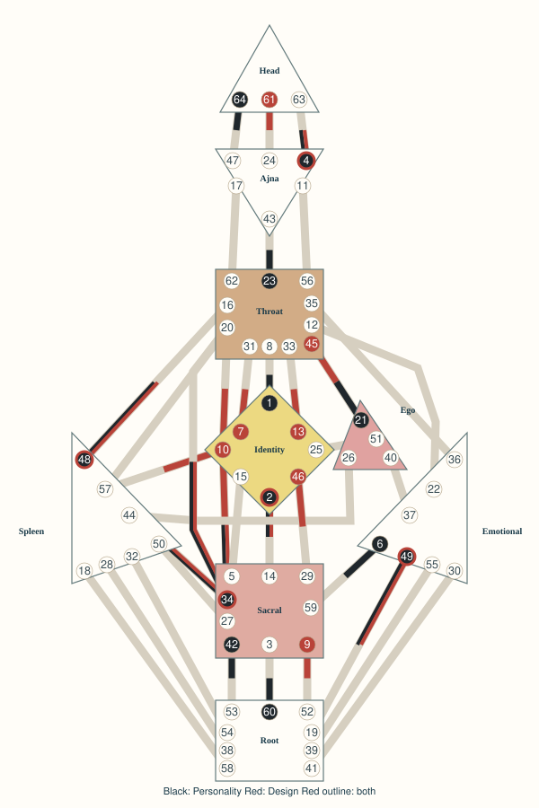

OWNER REVIEW ONLY / NOT A COMPLETE PAID REPORT
MANIFESTING_GENERATOR / SACRAL / 1/3 / SPLIT_DEFINITION

CONTENT_COVERAGE_GAP: SEC01, SEC02, SEC03, SEC04, SEC05, SEC06, SEC07, SEC08, SEC09, SEC10, SEC11, SEC12, SEC13, SEC14, SEC15, SEC16, SEC17. No reference-chart prose or generated filler substituted.